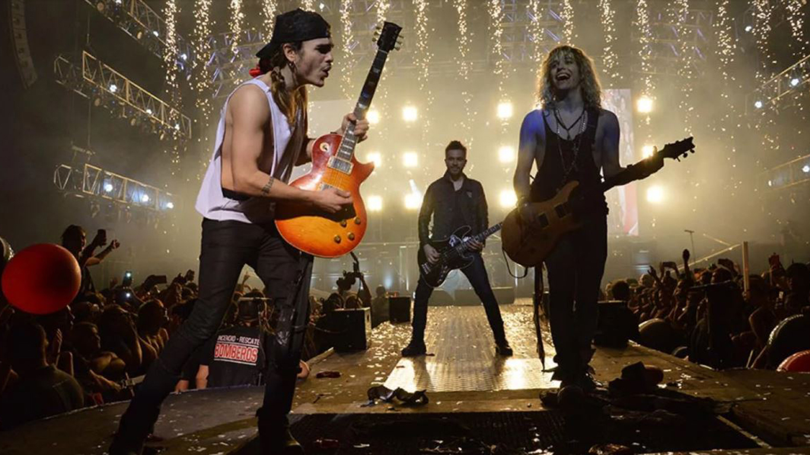

Bibliografia
Airbag es una reconocida banda argentina de rock que ha dejado una marca indeleble en la escena musical latinoamericana. Fundada en el año 2003 en Buenos Aires por los hermanos Patricio, Guido y Gastón Sardelli, la agrupación ha sido aclamada por su energía en el escenario y sus pegajosas melodías.
Los hermanos Sardelli, apasionados por la música desde temprana edad, decidieron formar Airbag con la visión de crear un sonido fresco y auténtico. Combinando influencias de rock clásico y contemporáneo, la banda lanzó su álbum debut homónimo en 2004, el cual rápidamente ganó popularidad en Argentina y otros países de habla hispana.
Con el paso de los años, Airbag ha consolidado su éxito con una serie de exitosos álbumes como "Blanco y Negro" (2006), "Una Hora a Tokyo" (2010) y "Libertad" (2017), cada uno recibiendo elogios tanto de la crítica como del público. Su estilo enérgico y sus letras introspectivas han resonado con una amplia audiencia, consolidándolos como una de las bandas más influyentes de la escena rockera argentina.
En la actualidad, Airbag continúa deleitando a sus seguidores con su música, manteniendo una agenda activa de conciertos y proyectos creativos. Su dedicación a la calidad musical y su capacidad para reinventarse han asegurado su lugar en el corazón de la escena musical latinoamericana, y su legado sigue creciendo con cada nueva producción.
